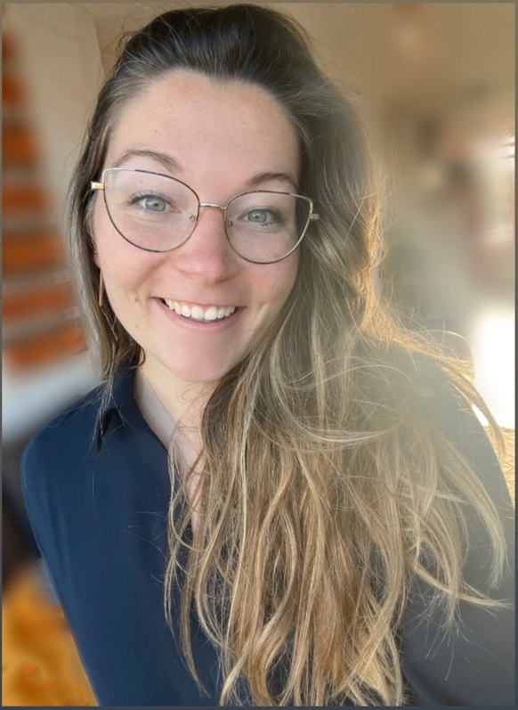

Originally from France, I grew up in the south west of the country. Once I
reached university, I wanted to discover how was the world out there, and
despite my very poor English level (I am French after all), I decided to
study to Sweden. After a wonderful year, I wanted to keep living abroad
but closer to my family and keep maintaining my Spanish, so I moved to
Spain.
The Master I was studying was not as I had hoped, so I then relocated to
the Netherlands. Despite the weather and surviving through COVID, I enjoy
the county, so after graduating, started working at ORTEC.
After 4 years of love-hate relationship with my current consulting role
(more enjoyment than hate, I would not be there otherwise), I decided to
take up on my next challenge: switching to software engineering! I believe
this role will fit me more than ever, and while I am impatiently trying to
rotate, I am really enjoying learning about web development and am still
having fun in my current role.
If you're not tired of reading, feel free to check out all my hobbies.